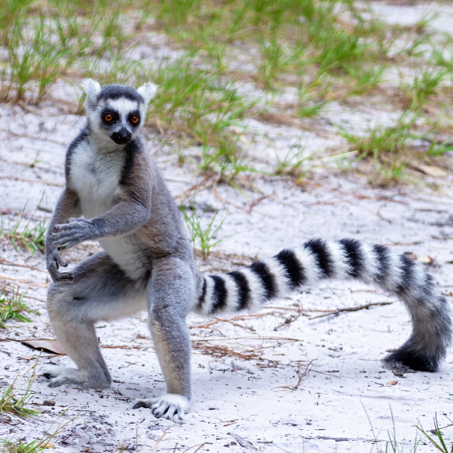

哺乳动物 · 动物界
环尾狐猴 Lemur catta

马达加斯加南部的特有狐猴，黑白环纹的长尾高举如旗，常在清晨坐地晒太阳，群体由雌性占据支配地位。
- 分类
- 门脊索动物门纲哺乳纲目灵长目科狐猴科属狐猴属
- 栖息环境
- 马达加斯加南部的干旱多刺林、河岸林与灌丛
- 地理分布
- 马达加斯加岛南部和西南部，为该国特有种
- 保护级别
- IUCN 濒危（EN）
物种志
环尾狐猴体长 0.4–0.5 米，尾长 0.5–0.6 米，体重 2–2.5 kg。它的背部为灰褐色，腹部白色，面部有黑色眼斑和白色面纹；尾巴上有 13–15 个黑白相间的环纹，末端总是黑色，行走时常高高竖起，像一面旗帜。
环尾狐猴仅分布于马达加斯加岛南部的干旱多刺林与河岸森林，主食果实、树叶、花和少量昆虫，旱季会取食仙人掌类植物补充水分。它们结成 6–25 只的群体，雌性在群体中占据支配地位，雄性通过腕部腺体的气味标记划分领地。清晨，它们常坐在岩石上张开四肢晒太阳，被称为“太阳崇拜”行为。每年 4–5 月繁殖，妊娠期约 135 天，每胎 1–2 仔。由于森林砍伐和干旱加剧，环尾狐猴被列为濒危。
形态与习性
- 食性果实、树叶、花与少量昆虫，旱季取食仙人掌
- 体长0.4–0.5 m，尾长 0.5–0.6 m
- 体重2–2.5 kg
- 寿命野外约 15 年
- 繁殖4–5 月繁殖，妊娠期约 135 天，每胎 1–2 仔
- 社会结构6–25 只的群体，雌性占据支配地位
- 尾环数尾上有 13–15 个黑白环纹
趣味知识
- 环尾狐猴的尾巴有 13–15 个黑白环纹，行走时高举如同旗帜。
- 清晨它们常坐在岩石上张开四肢晒太阳，被称为“太阳崇拜”。
- 环尾狐猴群体由雌性支配，雄性通过气味标记争取位置。
- 它们只分布在马达加斯加，是岛上特有的灵长类。